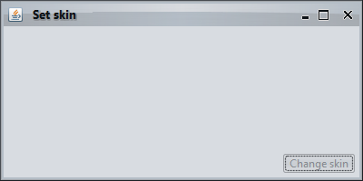

|
import java.awt.BorderLayout;
import java.awt.FlowLayout;
import java.awt.event.ActionEvent;
import java.awt.event.ActionListener;
import javax.swing.*;
import org.pushingpixels.substance.api.SubstanceLookAndFeel;
import org.pushingpixels.substance.api.skin.BusinessBlackSteelSkin;
/**
* Test application that shows the use of the
* {@link SubstanceLookAndFeel#setSkin(String)} API.
*
* @author Kirill Grouchnikov
* @see SubstanceLookAndFeel#setSkin(String)
*/
public class SetSkin_ClassName extends JFrame {
/**
* Creates the main frame for <code>this</code> sample.
*/
public SetSkin_ClassName() {
super("Set skin");
this.setLayout(new BorderLayout());
JPanel controls = new JPanel(new FlowLayout(FlowLayout.RIGHT));
final JButton changeSkin = new JButton("Change skin");
changeSkin.addActionListener(new ActionListener() {
public void actionPerformed(ActionEvent e) {
SwingUtilities.invokeLater(new Runnable() {
public void run() {
changeSkin.setEnabled(false);
// set new skin by class name
SubstanceLookAndFeel
.setSkin("org.pushingpixels.substance.api.skin.BusinessSkin");
repaint();
}
});
}
});
controls.add(changeSkin);
this.add(controls, BorderLayout.SOUTH);
this.setSize(400, 200);
this.setLocationRelativeTo(null);
this.setDefaultCloseOperation(JFrame.EXIT_ON_CLOSE);
}
/**
* The main method for <code>this</code> sample. The arguments are ignored.
*
* @param args
* Ignored.
*/
public static void main(String[] args) {
JFrame.setDefaultLookAndFeelDecorated(true);
JDialog.setDefaultLookAndFeelDecorated(true);
SwingUtilities.invokeLater(new Runnable() {
public void run() {
SubstanceLookAndFeel.setSkin(new BusinessBlackSteelSkin());
new SetSkin_ClassName().setVisible(true);
}
});
}
}
The screenshot below shows application frame under
Business Black Steel skin:

The screenshot below shows the result of calling this API
with org.pushingpixels.substance.api.skin.BusinessSkin:

|